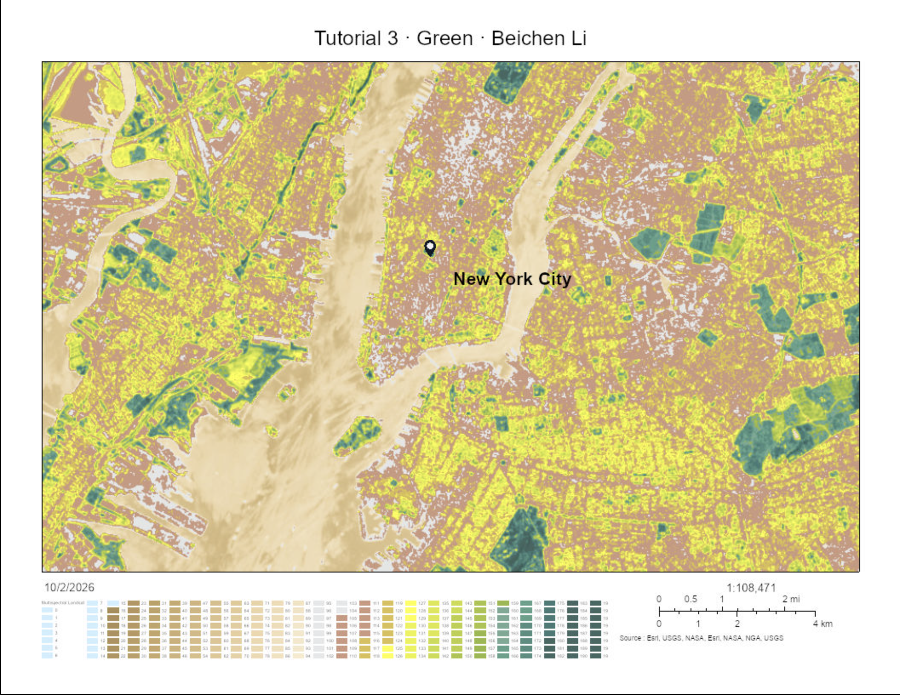
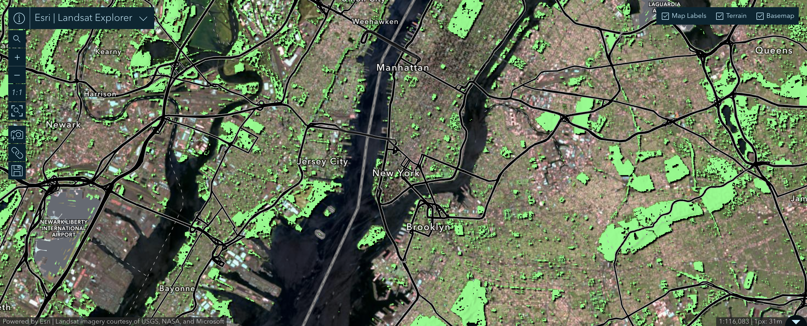

Week 04 · October 2026
What the green means
The question
What is the green at Washington Square Park, New York City, actually made of, and how do its pattern, scale, and density appear in the Landsat vegetation-index map?
The data
I used Multispectral Landsat Imagery Layer in Arcgis Map Viewer, which includes Landsat GLS, Landsat 8, and Landsat 9 imagery for use in visualization and analysis. The Landsat 8 and 9 imagery in this layer is updated daily and is directly sourced from the USGS Landsat collection on AWS. I also used the Landsat 8 and Landsat 9 images shown in Landsat Explorer, acquired on May 12 2026 and July 16 2026, with a scene cloud cover of 1% and 48% respectively. The sensor’s pixel size is 30 m, so each pixel represents about 900 m² on the ground. I examined the Normalized Difference Vegetation Index (NDVI), calculated from red band 4 and near-infrared band 5: (band 5 − band 4) / (band 5 + band 4). The imagery service is publicly viewable without signing in.
The method
In ArcGIS Map Viewer, I added the Multispectral Landsat imagery layer and selected the NDVI Colorized processing template. I kept my site point visible and used Landsat Explorer's spectral profile tool to compare the red and near-infrared reflectance of vegetation and built surfaces. I then switched to NDVI Raw to record the actual index values, because the colorized layer's popup reports a color-table position rather than the NDVI value. Finally, I used the mask tool with a range of 0.5 to 1.0 to highlight relatively green pixels. This threshold identifies vegetation reflectance; it does not certify habitat quality. The evidence section includes the interactive map and static screenshots with a legend and scale bar.
The evidence


What I found
Expectation: In Part 0, I predicted that the picnic area on Governors Island would have the highest NDVI, followed by a fairway at Liberty National Golf Course and the Pond in Central Park. My predicted values were 0.5, 0.2, and −0.1, respectively. On May 12, 2026, the measured values were 0.632 at Governors Island, 0.646 at Liberty National Golf Course, and 0.218 at the Pond. The golf-course fairway therefore ranked first. I am more concerned about getting the ordering wrong because it shows that a carefully maintained turf surface can appear slightly greener than a tree-covered picnic area. The Pond's positive value may also reflect the 30 m pixel scale, which can mix water with nearby trees and other surfaces.
Site:At Washington Square Park, the NDVI was 0.798 on May 12, 2026, when the scene cloud cover was 1%. The visible green at my site is mainly tree canopy, together with maintained lawn.
City: Washington Square Park's reading of 0.798 is higher than the Shanghai Botanical Garden median of 0.517 and the Tomson Shanghai Golf Club median of 0.600 in the tutorial table. This means that my sampled pixel had a higher NDVI on its acquisition date. The comparison does not mean that Washington Square Park has better habitat because the readings come from different cities, dates. NDVI measures the contrast between near-infrared and red reflectance rather than ecological quality.The Named Place: After I set the NDVI mask to 0.5–1.0, most of Liberty National Golf Course was highlighted. Its approximate NDVI was 0.646, although the highlighted surface is intensively maintained turf with limited habitat complexity. A few hundred metres away, much of the cleared interior of Liberty State Park remained below the threshold, at approximately 0.3. This area has supported white-tailed deer, but vegetation was cleared during contaminated-soil remediation and the park's revitalization program.
What this does not show
I am using the NDVI at Washington Square Park to stand for the amount of living habitat at my site, and it might fail because the index can give the park’s artificially maintained lawns and its tree-covered areas similarly high values even though they differ in vegetation structure and ecological function. Secondly, the sensor records the light reflected from the upper surface of vegetation; it does not identify plant species or show the what is under the canopy. Therefore, the map is not evidence that the parts of the park with the highest NDVI provide the highest-quality habitat. Besides, it only represents NDVI on one acquisition date, so the observed pattern may change with vegetation season, weather etc.